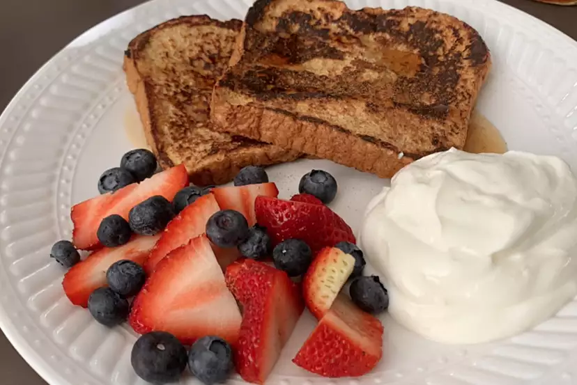

French Toast Recipe

Description
Enjoy some fluffy french toast!
Ingredients
- ¼ cup all-purpose flour
- 1 cup milk
- 1 pinch salt
- 3 eggs
- ½ teaspoon ground cinnamon
- 1 teaspoon vanilla extract
- 1 tablespoon white sugar
- 12 thick slices bread
Steps
-
Measure flour into a large mixing bowl. Slowly whisk in the milk.
Whisk in the salt, eggs, cinnamon, vanilla extract and sugar until
smooth.
-
Heat a lightly oiled griddle or frying pan over medium heat.
-
Soak bread slices in mixture until saturated. Cook bread on each side
until golden brown. Serve hot.